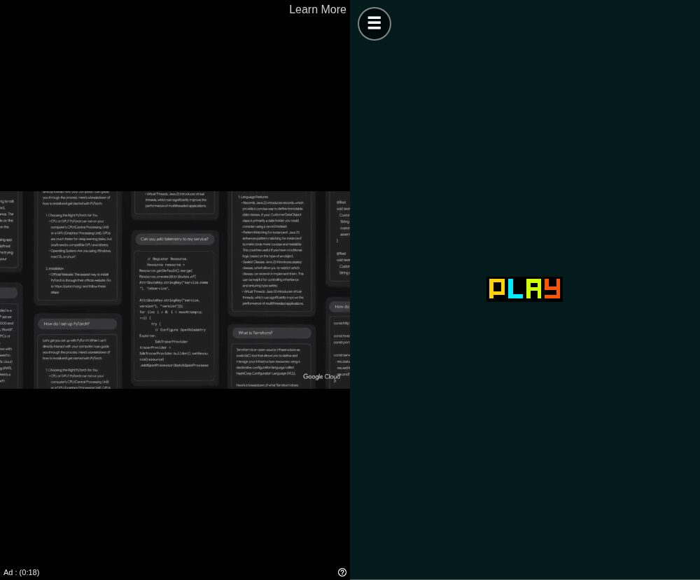

<meta data-alternate="https://freshmark.sunisalex.org/en/posts/technology/twoplayergames-ad-remover/" data-article="true" data-canonical="https://freshmark.sunisalex.org/posts/technology/twoplayergames-ad-remover/" data-description="一个用于 m.twoplayergames.org 的 Manifest V3 扩展：拦截横幅广告，跳过每局开始前的视频广告，并替游戏应答游戏内的广告请求，让游戏不会卡在等广告上。" data-freshmark-page data-title="一个去掉 TwoPlayerGames 广告的 Chrome 小扩展 — Freshmark"><main><header class="container article-header"><a href="/" class="back-link">← 返回全部文章</a><p class="eyebrow article-subject">技术</p><h1>一个去掉 TwoPlayerGames 广告的 Chrome 小扩展</h1><p class="article-dek">一个用于 <a href="http://m.twoplayergames.org">m.twoplayergames.org</a> 的 Manifest V3 扩展：拦截横幅广告，跳过每局开始前的视频广告，并替游戏应答游戏内的广告请求，让游戏不会卡在等广告上。</p><div class="article-meta"><time datetime="2026-10-07">2026年10月7日</time><span>2 分钟阅读</span><span>Chrome 扩展 · Manifest V3 · JavaScript · 网页游戏</span><span class="view-count" data-article-view-count hidden>本文访问量 <strong data-article-views></strong></span><a href="index.md" download>下载 Markdown</a><button type="button" class="article-share" data-share-article data-share-text="一个用于 m.twoplayergames.org 的 Manifest V3 扩展：拦截横幅广告，跳过每局开始前的视频广告，并替游戏应答游戏内的广告请求，让游戏不会卡在等广告上。" data-share-title="一个去掉 TwoPlayerGames 广告的 Chrome 小扩展"><span data-share-label>分享文章</span></button><output aria-live="polite" class="visually-hidden" data-share-status role="status"></output></div></header><div class="article-wrap"><aside class="toc"><div class="toc-head"><p>本文目录</p><button type="button" class="toc-toggle" aria-expanded="false" aria-label="展开或收起目录" data-toc-toggle><span class="toc-toggle-label">目录</span><span class="toc-toggle-icon" aria-hidden="true"></span></button></div><nav aria-label="目录" class="toc-links" data-toc-links><a href="#安装" class="toc-level-2">安装</a><a href="#去掉了什么" class="toc-level-2">去掉了什么</a><a href="#原理" class="toc-level-2">原理</a><a href="#测试" class="toc-level-2">测试</a><a href="#局限" class="toc-level-2">局限</a></nav></aside><article class="prose"><figure class="prose-figure"><picture class="responsive-picture"><source srcset="game-before-after.freshmark-af4802a7b377-480w.avif 480w, game-before-after.freshmark-af4802a7b377-960w.avif 960w, game-before-after.freshmark-af4802a7b377-1000w.avif 1000w" type="image/avif"><source srcset="game-before-after.freshmark-af4802a7b377-480w.webp 480w, game-before-after.freshmark-af4802a7b377-960w.webp 960w, game-before-after.freshmark-af4802a7b377-1000w.webp 1000w" type="image/webp"></picture><figcaption>使用前 / 使用后</figcaption></figure><p><a href="https://m.twoplayergames.org/">TwoPlayerGames</a> 上有不少好玩的双人游戏，但广告出现在三个地方：游戏列表上方的横幅，点击 <strong>Play</strong> 后的视频广告（我测试时那一条超过 30 秒），以及很多游戏内部的插播广告。<strong>TwoPlayerGames Ad Remover</strong> 是一个很小的 Chrome 扩展，把这三处广告都去掉了。它只在 <a href="http://twoplayergames.org">twoplayergames.org</a> 上生效，不影响其他网站。</p><p><strong><a href="twoplayergames-ad-remover-1.0.0.zip">下载 TwoPlayerGames Ad Remover 1.0.0（.zip，9 KB）</a></strong></p><p>SHA-256：<code>fe797edb53efc07d374668e4dedeaffd4059c593dff876376eb3c0b2ae428e3c</code></p><h2 id="安装">安装</h2><p>这个扩展没有上架 Chrome 网上应用店，需要以“未打包的扩展程序”方式加载：</p><ol><li>下载上面的 zip 并解压，得到一个名为 <code>twoplayergames-ad-remover</code> 的文件夹。</li><li>在 Chrome 中打开 <code>chrome://extensions</code>。</li><li>打开右上角的<strong>开发者模式</strong>。</li><li>点击<strong>加载已解压的扩展程序</strong>，选择 <code>twoplayergames-ad-remover</code> 文件夹（里面有 <code>manifest.json</code> 的那一层）。</li><li>打开 <a href="https://m.twoplayergames.org/">m.twoplayergames.org</a>，已经打开的话刷新一下。</li></ol><p>需要 Chrome 111 或更新版本，Edge、Brave 等基于 Chromium 的浏览器也可以使用。安卓版 Chrome 不支持扩展，在手机上需要换一个能加载 Chrome 扩展的浏览器。安装后不要删除这个文件夹：Chrome 每次启动都会从这里加载扩展。</p><h2 id="去掉了什么">去掉了什么</h2><table><thead><tr><th>位置</th><th>网站的做法</th><th>扩展的处理</th></tr></thead><tbody><tr><td>首页和分类页</td><td>AdSense 横幅，以及一个推荐搜索词的广告单元</td><td>拦截请求，并隐藏空出来的广告位，游戏列表随之上移</td></tr><tr><td>每局游戏开始前</td><td>点击 <strong>Play</strong> 后播放 Google IMA 视频广告</td><td>拦截视频广告 SDK，网站随即直接进入游戏</td></tr><tr><td>游戏内部</td><td>通过 Google H5 Games Ads 接口（<code>adBreak()</code>）插播广告</td><td>拦截广告脚本，并告诉游戏“当前没有广告”</td></tr></tbody></table><figure class="prose-figure"><picture class="responsive-picture"><source srcset="home-before-after.freshmark-4a0cb6e8b4d8-480w.avif 480w, home-before-after.freshmark-4a0cb6e8b4d8-960w.avif 960w, home-before-after.freshmark-4a0cb6e8b4d8-1000w.avif 1000w" type="image/avif"><source srcset="home-before-after.freshmark-4a0cb6e8b4d8-480w.webp 480w, home-before-after.freshmark-4a0cb6e8b4d8-960w.webp 960w, home-before-after.freshmark-4a0cb6e8b4d8-1000w.webp 1000w" type="image/webp"></picture><figcaption>首页 · 使用前 / 使用后</figcaption></figure><h2 id="原理">原理</h2><p>扩展除图标外只有四个文件，只申请了一项权限 <code>declarativeNetRequest</code>。它的脚本只在 <a href="http://m.twoplayergames.org">m.twoplayergames.org</a> 和 <a href="http://files.twoplayergames.org">files.twoplayergames.org</a> 上运行，所以 Chrome 会提示它能读取和更改这两个网站上的数据。它不会向任何地方发送数据。</p><p><strong><code>rules.json</code>：拦截广告服务器。</strong> 一条声明式网络规则拦截发往 Google 广告域名的请求（<code>googlesyndication.com</code>、<code>doubleclick.net</code>、<code>imasdk.googleapis.com</code> 等）。规则带有条件 <code>initiatorDomains: [&quot;twoplayergames.org&quot;]</code>，所以只对 <a href="http://twoplayergames.org">twoplayergames.org</a> 及其子域名下的页面和游戏框架发出的请求生效，其他网站的广告不受影响。规则由 Chrome 直接执行，所以扩展不需要后台脚本。</p><p><strong><code>hide.css</code>：收起空广告位。</strong> 广告脚本被拦截后，横幅的容器仍会在页面顶部占一块位置。这份样式表隐藏了 <code>.main-ads</code>、<code>ins.adsbygoogle</code> 和视频广告的遮罩层 <code>#ima-container</code>。</p><p><strong>开局前的视频广告不需要额外处理。</strong> 动手之前我先读了网站自己的脚本。它找不到 Google IMA（<code>google.ima</code>）时，会在控制台输出“No Google IMA, maybe an ad-blocker? 🤔”，隐藏广告容器，并启用 <strong>Play</strong> 按钮。点击 <strong>Play</strong> 后，启动广告失败，直接进入游戏。所以只要拦截 <code>ima3.js</code> 就够了。</p><p><strong><code>ad-shim.js</code>：让游戏不再等广告。</strong> 放在 <code>files.twoplayergames.org</code> 上的游戏使用 Google 的 H5 Games Ads 接口，会调用 <code>adConfig()</code> 和 <code>adBreak()</code>，其中一些要等到 <code>onReady</code> 或 <code>adBreakDone</code> 回调之后才开始或继续。如果只是拦截广告脚本，这些回调永远不会执行。这个替代脚本在页面自己的 JavaScript 环境中（<code>&quot;world&quot;: &quot;MAIN&quot;</code>）先于所有页面脚本运行，提供一个替代的 <code>window.adsbygoogle</code> 对象：</p><ul><li><code>adConfig({ onReady })</code> 会立即调用 <code>onReady</code>。</li><li><code>adBreak({ type, adBreakDone })</code> 从不调用 <code>beforeAd</code>，只以 <code>noAdPreloaded</code> 状态调用 <code>adBreakDone</code>。真正的 SDK 在没有准备好广告时报告的也是这个状态。</li><li>激励广告（<code>type: &quot;reward&quot;</code>）报告 <code>notReady</code>。你拿不到奖励，但游戏会照常运行。</li></ul><p>页面里写的是 <code>adsbygoogle = window.adsbygoogle || []</code>，也可能有页面直接赋值一个新数组。为此，<code>window.adsbygoogle</code> 用 getter 和 setter 定义：赋值数组不会替换掉替代对象，数组里已经排队的请求也会被处理。</p><h2 id="测试">测试</h2><p>我把扩展加载进无头 Chromium，用手机的 User-Agent 依次打开首页、《Basket Random》和《Flip Duel》，装和不装扩展各测一遍：</p><ul><li><strong>不装扩展：</strong> 首页加载了来自 <code>pagead2.googlesyndication.com</code>、<code>googleads.g.doubleclick.net</code> 等域名的脚本，并显示一个 60 像素高的广告单元。在《Basket Random》中点击 <strong>Play</strong> 15 秒后，屏幕上仍是视频广告，还剩 18 秒。</li><li><strong>装上扩展：</strong> 所有发往广告域名的请求都以 <code>net::ERR_BLOCKED_BY_CLIENT</code> 失败。在游戏页面上，网站自己的日志依次输出“No Google IMA”→“Show the content 👾”，游戏的开始界面随即出现。Unity 游戏《Flip Duel》的日志中出现了来自替代脚本的“AdConfig Ready”，游戏正常加载。</li></ul><h2 id="局限">局限</h2><ul><li>有些游戏（例如《Fire and Water》和《Basketball Stars》）嵌入自 GameDistribution（<code>html5.gamedistribution.com</code>）。在这些页面上，扩展仍会跳过网站的视频广告，但 GameDistribution 框架里有它自己的广告系统，扩展没有处理。GameDistribution 的游戏也运行在许多其他网站上，拦截它的广告可能让其中一些游戏卡住。</li><li>扩展依赖网站当前的页面结构和广告设置。如果 TwoPlayerGames 改变了广告的展示方式，可能需要更新 <code>hide.css</code> 里的选择器或 <code>rules.json</code> 里的域名列表。</li><li>样式表和替代脚本只在 <code>m.twoplayergames.org</code> 和 <code>files.twoplayergames.org</code> 上的游戏框架中运行。我没有测试桌面版网站 <code>www.twoplayergames.org</code>。</li></ul></article></div><section class="container comments" data-comments data-comments-path="/posts/technology/twoplayergames-ad-remover/"><div class="comments-head"><div><p class="eyebrow">评论</p><h2 data-comments-title>评论</h2></div><p>登录后参与讨论。注册时只需验证一次邮箱。</p></div><div class="comment-list" aria-live="polite" data-comment-list><p class="comment-state" data-comment-state>正在加载评论…</p></div><button type="button" class="comment-more" data-comments-more hidden>加载更早的评论</button><div class="comment-auth" data-comment-auth><p class="comment-auth-status" data-auth-loading>正在检查登录状态…</p><div hidden data-auth-guest><form class="comment-auth-form" data-auth-login><h3>登录后评论</h3><label>邮箱<input autocomplete="email" name="email" maxlength="254" required type="email"></label><label>密码<input autocomplete="current-password" name="password" maxlength="128" required type="password"></label><div class="comment-form-foot"><p class="comment-form-status" role="status" data-auth-login-status></p><button type="submit">登录</button></div></form><details class="comment-register"><summary>还没有账号？注册</summary><form class="comment-auth-form" data-auth-register><label>昵称<input autocomplete="name" name="name" maxlength="40" required></label><label>邮箱<input autocomplete="email" name="email" maxlength="254" required type="email"></label><label>密码<input autocomplete="new-password" name="password" maxlength="128" required type="password" minlength="8"></label><p class="comment-auth-hint">至少 8 个字符。</p><div class="comment-form-foot"><p class="comment-form-status" role="status" data-auth-register-status></p><button type="submit">注册</button></div></form></details></div><form class="comment-auth-form" hidden data-auth-verify><p>验证码已发送到邮箱，请在 10 分钟内完成注册。</p><label>六位验证码<input autocomplete="one-time-code" name="code" maxlength="6" required minlength="6" inputmode="numeric" pattern="[0-9]{6}"></label><div class="comment-form-foot"><p class="comment-form-status" role="status" data-auth-verify-status></p><button type="submit">完成注册</button></div></form><div class="comment-auth-user" data-auth-user hidden><p>当前登录： <strong data-auth-user-name></strong> <span data-auth-user-email></span></p><button type="button" data-auth-logout>退出登录</button></div></div><form class="comment-form" hidden data-comment-form><label>评论内容<textarea maxlength="2000" minlength="2" name="body" placeholder="写下你的想法…" required rows="5"></textarea></label><p class="comment-markdown-hint">支持 Markdown：加粗、链接、引用、列表和代码。</p><label aria-hidden="true" class="comment-honeypot">Website<input autocomplete="off" name="website" tabindex="-1"></label><div class="comment-form-foot"><p class="comment-form-status" role="status" data-comment-form-status></p><button type="submit" data-comment-submit>发表评论</button></div></form></section></main>